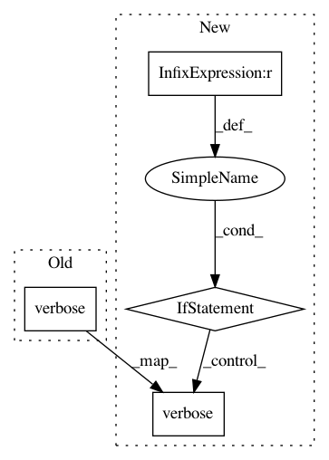

f34b56a0339c4510d0789f829df8b5d3b70a3f85,python/src/nnabla/utils/nnp_graph.py,NnpNetwork,_get_variable_or_create,#NnpNetwork#Any#Any#Any#,251
Before Change
return var
// Trying to load the parameter from .nnp file.
callback.verbose(
"Loading parameter `{}` from .nnp.".format(name))
try:
param = get_parameter(name)
if param is None:
logger.info(
After Change
with nn.parameter_scope("", current_scope):
param = get_parameter(name)
if param is not None:
assert shape == param.shape
param = param.get_unlinked_variable(need_grad=v.need_grad)
v.variable = param
param.name = name
return param
// Parameter does not exist in the global scope.
// Then try to load the parameter from .nnp file.
callback.verbose(
"Loading parameter `{}` from .nnp.".format(name))
param = get_parameter(name)
if param is None:
logger.info(
In pattern: SUPERPATTERN
Frequency: 3
Non-data size: 4
Instances
Project Name: sony/nnabla
Commit Name: f34b56a0339c4510d0789f829df8b5d3b70a3f85
Time: 2019-07-01
Author: Takuya.Yashima@sony.com
File Name: python/src/nnabla/utils/nnp_graph.py
Class Name: NnpNetwork
Method Name: _get_variable_or_create
Project Name: deepfakes/faceswap
Commit Name: 4376bbf4f85f9771b0e3752ccf9504efb4e43d21
Time: 2019-01-22
Author: 36920800+torzdf@users.noreply.github.com
File Name: tools/lib_alignments/jobs.py
Class Name: Rename
Method Name: rename_faces
Project Name: deepfakes/faceswap
Commit Name: 68109fcc80b02c45cd069c2d220b8b9e0705ac3d
Time: 2019-10-29
Author: 36920800+torzdf@users.noreply.github.com
File Name: plugins/extract/pipeline.py
Class Name: Extractor
Method Name: _set_plugin_batchsize